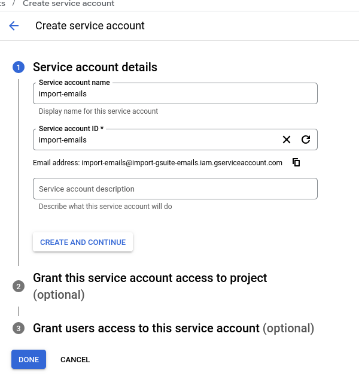
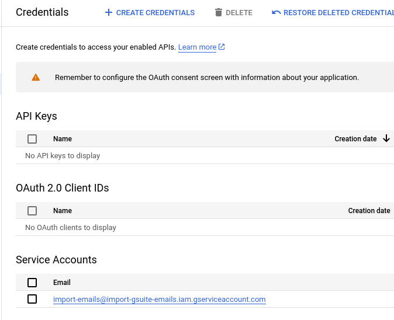
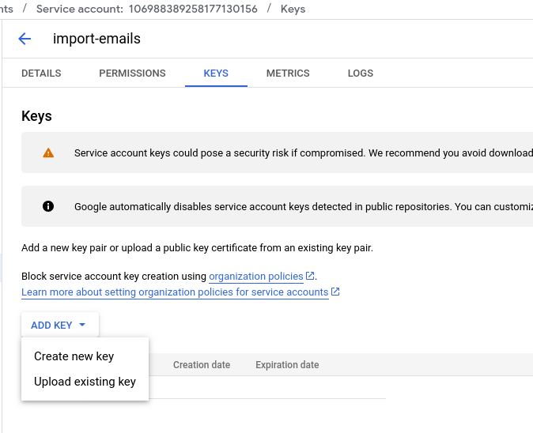
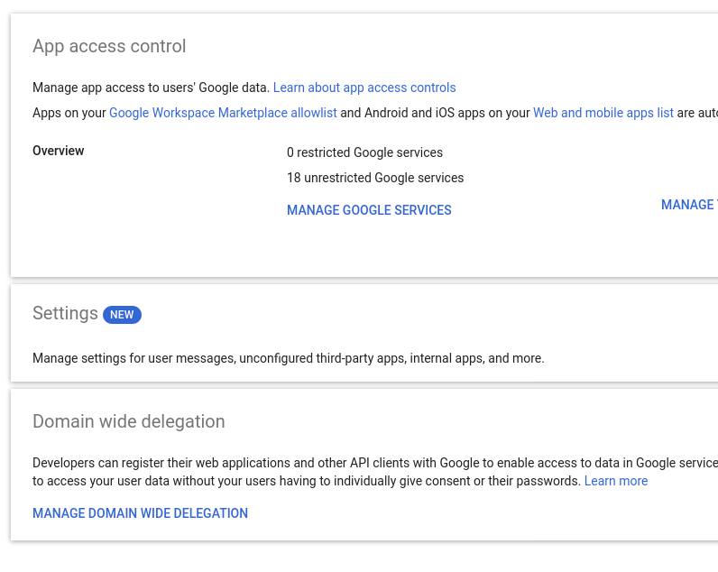
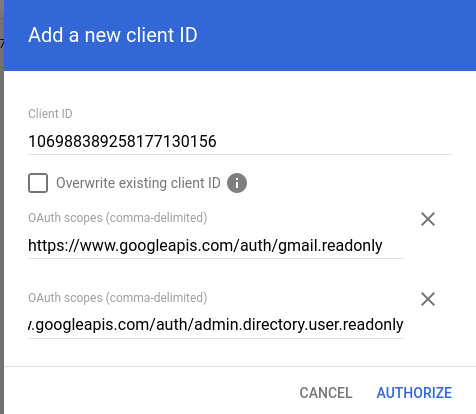
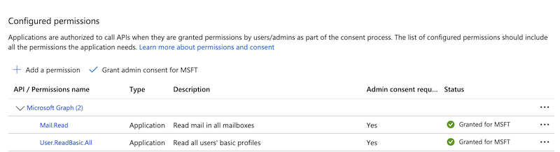

Import emails#
This documentation applies to Piler enterprise edition 2.1.0
Revision #1
Publication date: 2025-DEC-07
Import local emails#
Usage: pilerimport [options]
Options:
-dir string
Process all files in directory (recursively)
-eml string
Process a single EML file
-mbox string
Process an mbox file (extracts all messages)
-progress
Show progress bar (suppresses info logs)
-remove
Remove file after successful processing
-tenantid string
Tenant ID (overrides TENANT_ID env var)
-workers int
Number of parallel workers (default 4)
Examples:
pilerimport -eml message.eml -tenantid fictive
pilerimport -dir /path/to/emails -tenantid fictive -workers 8
pilerimport -mbox archive.mbox -tenantid fictive -workers 4 -progress
pilerimport -dir /path/to/emails -remove -workers 4 -progress
Import from an IMAP server#
Usage of imapfetch:
-batchsize int
batch size to download before processing
-dir string
directory to chdir
-folders string
Comma separated list of IMAP folders to download
-i Read IMAP conn data from import table
-j int
job ID
-no-ssl
Do not use SSL/TLS
-oauth2-token string
OAuth2 access token file
-password string
IMAP password
-port int
port number (default 993)
-print-folders
only print IMAP folders, then exit
-readonly
Open mailbox in read-only mode
-remove
remove downloaded messages
-search string
Search expression
-server string
IMAP server
-tenantid string
tenant ID (required)
-user string
IMAP user
-verbose
verbose mode
-x string
IMAP folders to skip (default "junk,trash,spam,draft")
Examples:
imapfetch -server imap.aaa.fu -user bela@aaa.fu -password abcde123 -tenantid piler
The imapfetch utility can download emails from an IMAP server to the current directory, then you can use pilerimport to process them.
Import from Google Workspace#
Enable Gmail API and Admin SDK API#
Go to Google Cloud Console
Create a project, eg. “import-emails”
Click on “APIs & Services”, then “Enable APIs and Services”
Enable the “Gmail API” and “Admin SDK API”
Create a Service Account#
Click on “APIs & Services”, then “Create credentials”, and select “Service account”

After creating it, click on the service account.

Select the “Keys” tab, click on “Add key” / “Create new key”. The key type shall be “JSON”, then save the json file.

Grant domain wide delegation#
We are going to impersonate users. To do that go Google Admin Console
Click on “Security”, then “Access and data control” and “API Controls”.
Then select “Manage Domain Wide Delegation”

Add the Service Account Client ID and authorize the following scopes:
https://www.googleapis.com/auth/gmail.readonly https://www.googleapis.com/auth/admin.directory.user.readonly

Download all emails#
Use your Google Workspace admin email (eg. admin@example.com) with the json credentials file you created above:
download-emails-google-workspace.py --admin admin@example.com --credentials import-emails-d25d9743f508.json
The script downloads emails to “emails/user@example.com” directory.
Then all you need to do is to import them:
chown -R piler:piler .
pilerimport -dir emails -remove
Import from Microsoft 365#
Create a new application with a secret in Azure portal#
Grant the following application type permissions:
- Mail.Read
- User.ReadBasic.All

If everything is set properly, you see a similar output for the decoded access token. Notice the “roles” section.
{
"aud": "https://graph.microsoft.com",
"iss": "https://sts.windows.net/fe3b7b62-7d1a-4bcc-a513-e3b0798e601f/",
"iat": 1739172947,
"nbf": 1739172947,
"exp": 1739176847,
"aio": "k2RgYGjT0svi6ArYtthhkX+BhEkbAA==",
"app_displayname": "imap-import",
"appid": "4bc3a597-1602-4d3f-b07e-264374805380",
"appidacr": "1",
"idp": "https://sts.windows.net/fe3b7b62-7d1a-4bcc-a513-e3b0798e601f/",
"idtyp": "app",
"oid": "456bad53-c1db-4ab2-b149-5c95e47c556c",
"rh": "1.AVIAYns7_hp9zEulE-OweY5gHwMAAAAAAAAAwAAAAAAAAAC6AABSAA.",
"roles": [
"User.ReadBasic.All",
"Mail.Read"
],
"sub": "456bad53-c1db-4ab2-b149-5c95e47c556c",
"tenant_region_scope": "NA",
"tid": "fe3b7b62-7d1a-4bcc-a513-e3b0798e601f",
"uti": "5hddMVdLBEiufY9lQN7YAA",
"ver": "1.0",
"wids": [
"0997a1d0-0d1d-4acb-b408-d5ca73121e90"
],
"xms_idrel": "7 10",
"xms_tcdt": 1669093587
}
Install the msal python3 package#
pip install msal
Create config.py#
Create config.py, and set the values for client_id, client_secret and tenant_id. Feel free to customise the list of SKIP_FOLDERS. These are IMAP folders that won’t be processed.
config.py:
DEBUG = False
SKIP_FOLDERS = ['Deleted Items', 'Drafts', 'Junk Email']
client_id = ".........."
client_secret = "......"
tenant_id = "......."
Usage#
You can download emails from a single mailbox
download-emails-o365.py --email user@example.com
Or you can download all users’ emails by omitting the –-email argument.
The tool creates a directory called ‘email’ in the current directory. Each mailbox gets its own directory, eg. 8f7cd945-c816-491b-8c8c-577bd664189a
The tool preserves the IMAP folder structure, eg.
ls -la emails/8f7cd945-c816-491b-8c8c-577bd664189a
total 12
drwxr-xr-x 2 piler piler 4096 May 30 09:29 Inbox/
drwxr-xr-x 3 piler piler 4096 May 30 09:29 folder2/
drwxr-xr-x 2 piler piler 4096 May 30 09:29 'test folder 1'/
When you have downloaded all emails, run pilerimport to import them. The command below processes all emails in the “emails” directory, and removes the processed emails:
pilerimport -dir emails -remove